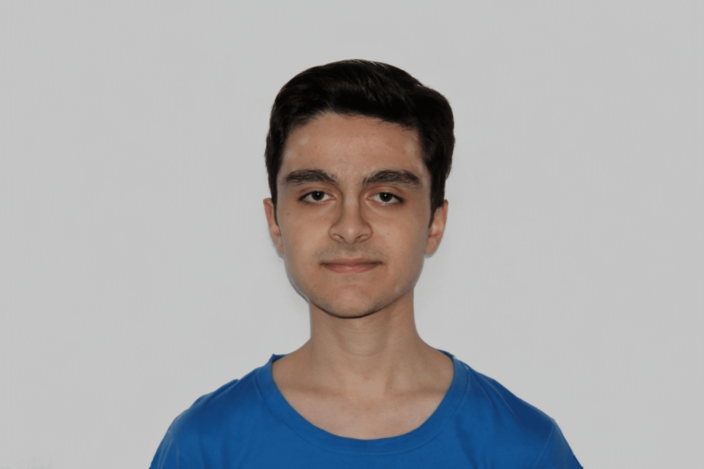
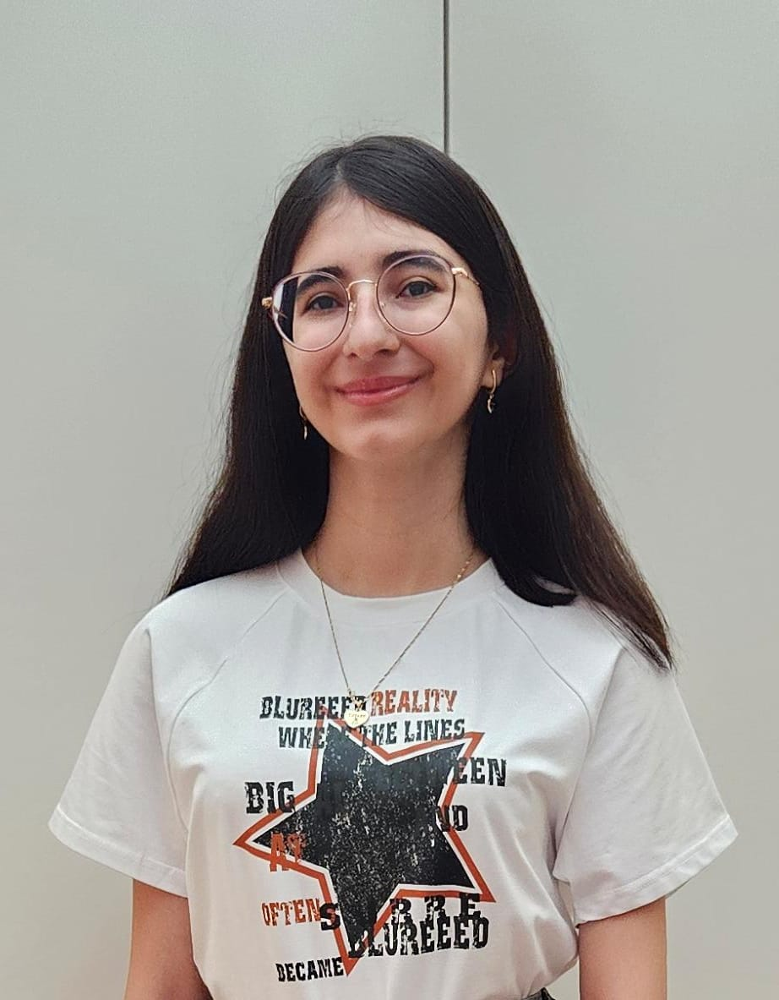
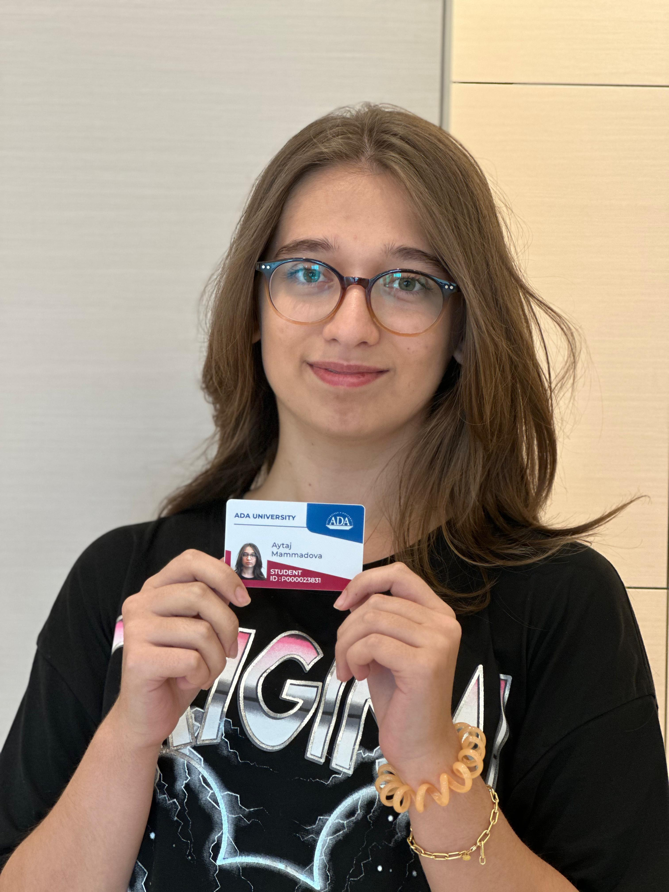
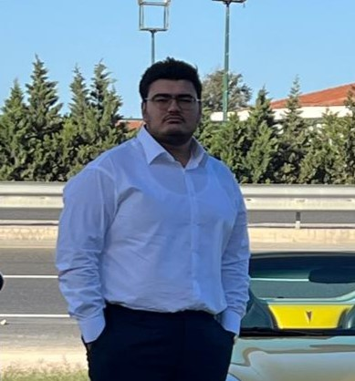

Omar Gadimli
BSCS 2028 student at ADA University.
I have a passion for math. Due to this passion, I participated in many math olympiads. I have two national olympiad medals, and I represented Azerbaijan two times in the international stage- one Honorable Mention and one Bronze Medal. I believe in the importance of choosing ADA university for my future career.
Codecademy: Omar Gadimli

Banu Ibrahimli
BSIT 2028 student at ADA University.
I am a first-year IT student with a deep passion for technology. I have participated in contests and olympiads in informatics during my school years. To further develop my skills, I chose Inforamation Technologies major at ADA University.
Codecademy: Banu Ibrahimli

Aytaj Mammadova
BSIT 2028 student at ADA University.
I am a first-year student, and my favorite subject is physics. I have quite a few hobbies, including swimming and drawing, which are my favorites. I believe choosing ADA University was one of the greatest decisions I have made, as the university provides valuable knowledge, numerous opportunities, and support for developing our hobbies.
Codecademy: Aytaj Mammadova

Shamir Valiyev
BSIT 2025 student at ADA University.
Hi my name is Shamir Valiyev. BSIT2025. I love playing basketball and tennis. In my free time I often read some historical books and try to learn new historical things. I don’t have favorite subject but I love doing mathematics during doing nothing. I do have some awards and won some medals and prizes from basketball and tennis.
Codecademy: Shamir Valiyev